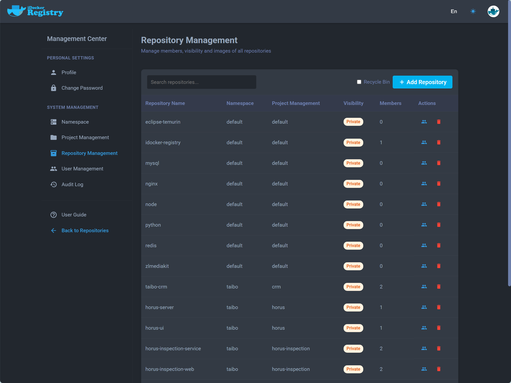
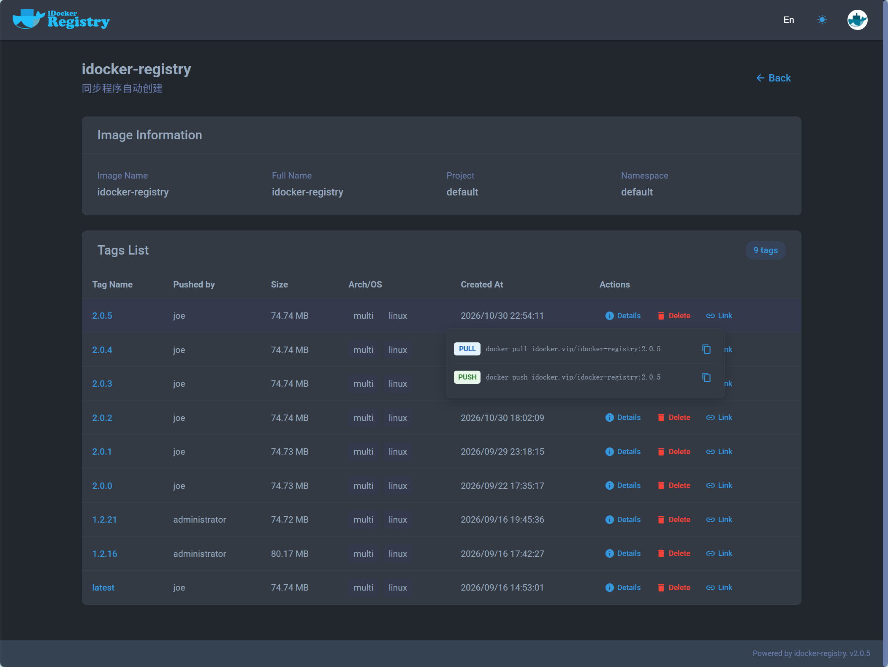

三层资源模型
命名空间 → 项目 → 仓库的层级结构，清晰隔离团队、环境与业务资源。
企业级 自托管 MIT 许可证
以「命名空间 → 项目 → 仓库」三层模型组织镜像，提供仓库级细粒度成员权限、Docker Registry v2 全量代理与完整的操作审计日志 —— Web UI 与 Docker CLI 共用同一套账号体系。
$ docker login idocker.vip
$ docker pull idocker.vip/nginx:latest
$ docker pull idocker.vip/wvp/media-worker:latest单段路径自动归属内置的 default 项目（基础镜像公共库），两段路径为「项目/仓库」。
下面是实际运行中的界面：左侧为仓库管理，右侧为镜像详情与标签列表。


围绕镜像仓库的日常运维场景设计：管得清、看得见、记得全。
命名空间 → 项目 → 仓库的层级结构，清晰隔离团队、环境与业务资源。
内置 default 项目存放 mysql / redis / nginx / jdk 等基础镜像，使用单段路径，对所有登录用户可见、可拉取。
4 种系统角色，成员授权落实在仓库级别（repository_members），授权即生效。
对 Docker Registry v2 API 的完整代理，集成鉴权、权限校验与操作日志记录。
push 后标签自动入库，无需手动同步；最新标签会自动同步为 latest 引用。
完整的操作记录，支持搜索、筛选、导出与按时间清理。
内置 zh-CN / en-US 两套文案，可在界面中即时切换。
浅色 / 深色 / 跟随系统三种模式，由 CSS 变量驱动，偏好本地留存。
命名空间用于团队 / 环境等管理分组；镜像仓库的路径只由「项目」和「仓库」决定。
管理分组，用于划分团队或环境，不参与镜像仓库路径。
仓库的容器与授权边界，镜像路径的首段即项目名。
镜像的实际载体，承载标签、大小与推送时间等元数据。
# default 项目：单段路径，全员可见可拉取
idocker.vip/nginx:latest
# 其他项目：两段路径「项目/仓库」
idocker.vip/wvp/media-worker:latestdefault 命名空间下的 default 项目是受保护的基础镜像公共库，不可删除、不可改名、不可停用。其中的镜像对所有登录用户可见、可拉取；推送则仅限管理员或被授权成员。
保护规则同时作用于删除、改名与停用，无法通过先改名再删除绕过。
系统角色决定后台可及范围，仓库成员角色决定 Docker 侧的读写能力。
| 角色 | 访问范围 | Docker 权限 |
|---|---|---|
admin |
所有资源、所有项目，无需成员关系 | pull / push / delete |
project_manager |
所辖项目的成员管理 | pull / push / delete |
developer |
被授权仓库的镜像读写 | pull / push / delete |
operator |
被授权仓库的只读访问 | pull |
仓库级成员表（repository_members）记录「谁在哪个仓库里是什么角色」，角色枚举为 project_manager / developer / operator，每个仓库对每个用户只保留一条成员记录。
Web 用户即仓库用户：登录 Docker 使用的就是平台账号。
docker login idocker.vip输入平台账号与密码。登录成功后凭据保存在本地 Docker 配置中。
docker pull idocker.vip/nginx:latestdefault 项目的基础镜像全员可拉取；项目镜像请替换为「项目/仓库」路径。
docker tag my-app:latest idocker.vip/wvp/my-app:latest
docker push idocker.vip/wvp/my-app:latest推送成功后标签即时入库；当仓库存在多个标签时，创建时间最新的标签会自动同步为 latest。
# 构建镜像（compose 未声明 build 段）
docker build -t idocker-registry:1.0.2 .
# 启动服务
docker compose up -d
首次启动会创建默认的管理员账号
admin
与默认命名空间 default。请登录后立即修改默认密码。
默认管理员密码请查阅部署文档；本页不展示明文凭据。
前后端分离的两个子系统，各自独立安装依赖与构建。
idocker-registry-uiidocker-registry-server| 端点 | 说明 |
|---|---|
/api/auth/* |
登录、注册、刷新令牌 |
/api/users/* |
用户管理（仅 admin） |
/api/namespaces/* |
命名空间 CRUD |
/api/projects/* |
项目管理 |
/api/repository/* |
仓库管理、镜像标签、仓库成员 |
/api/audit/* |
审计日志 |
/api/sync/* |
镜像同步 |
/v2/* |
Docker Registry API 代理 |
非管理员不能通过 push 创建新仓库。请先在 Web UI 中创建好项目与仓库，再执行 push。
未指定标签时拉取 latest。平台会把创建时间最新的标签自动同步为 latest 引用，因此不写标签也能拿到最新版本。
不可以。default 命名空间与 default 项目受保护，删除、改名、停用均会被拒绝。
密码需包含至少 6 个字符且至少 1 个特殊符号。管理员可在用户管理中重置；用户本人可在个人中心修改密码。
服务端统一使用 Asia/Shanghai，数据库以 UTC ISO 存储，Web 界面按浏览器时区展示，属预期行为。
可以。内部 registry 已启用删除能力，具备删除权限的角色可在镜像详情中删除标签。